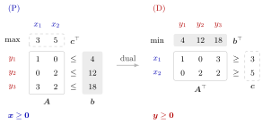

Dual Linear Program¶
Definition¶
Let , and , and consider the primal linear program, a linear program in standard form
Its dual linear program is
or, written out, subject to for and for . The are the dual variables: there is one for each of the primal constraints (the sign constraints get none) and one dual constraint for each of the primal variables. A linear program in another form is first brought into standard form, or dualized directly with the transformation scheme.
Interpretation¶
The dual linear program looks for the best upper bound on the primal optimum that can be proved by adding up the primal constraints with nonnegative weights. Weights turn the constraints into one inequality . If the combined coefficient of every is at least , then, since , the objective is at most . The dual minimizes this bound.

The figure lays out the linear program of Example 1 below and its dual side by side. Each primal constraint row carries a dual variable (red), and each primal variable (blue) gets one dual constraint: the rows , , of become the columns of . The right-hand side (grey) becomes the dual objective, the objective coefficients (dashed) become the dual right-hand side, turns into and into .
Each part of the definition has a job. The weights must be nonnegative, because multiplying a constraint by a negative number reverses it (Example 4 below). The dual constraints only ask , not equality, because a larger coefficient of a nonnegative can only raise the left-hand side. The transpose appears because the weights multiply rows of , while the dual constraints are indexed by its columns.
The same weights have a geometric meaning. For every the feasible region lies in the halfspace . Write for the -th row of , so that . If only constraints binding at a point (those with ) get positive weight, is a nonnegative combination of the normals of the binding constraints, so by the normal cone theorem it lies in the normal cone of at , and the boundary hyperplane of this halfspace touches at .
Economically, is the capacity of resource and the revenue of product . A buyer offers a price per unit of resource and wants to pay as little as possible, , but the company only sells if each product's resources fetch at least its revenue: . This links the dual variables to the shadow prices of OR Modelling.
Key Results¶
- The dual of the standard-form primal is : dual variables and dual constraints.
- For every with and every primal feasible , , so each dual feasible gives an upper bound on the primal objective (formalized as weak duality).
- The dual optimal value is the tightest such bound: . When the primal has an optimal solution, this bound equals the primal optimum (strong duality).
- Geometry: for a point and with whenever the -th constraint is slack at , that is, , and , the hyperplane is a supporting hyperplane of through , by the normal cone theorem.
- Economic reading: is the price per unit of resource offered by a buyer; the dual constraints say that selling the resources for one unit of product earns at least its revenue .
Examples¶
1. Bounds from combined constraints. For subject to , , , , three times the third constraint gives , and since , and , . The weights give , so . The weights give , so , and this bound is attained at with .
2. The dual of the linear program of Example 1 above. With having rows , , , the dual is
The three weight vectors of Example 1 are dual feasible with , and ; for both constraints hold with equality: and .
3. One constraint versus both. For subject to , , : using only the first constraint requires and , so the best bound is . Using only the second requires and , so and the best bound is . The dual is subject to , , . Combining both constraints with gives , better than either single constraint, and is feasible with , so no bound below exists.
4. A negative weight gives a false bound. In the linear program of Example 1 above, take . Then and , so holds, and . Yet at the feasible point . The weight turns into , which points the wrong way, so the condition cannot be dropped.
Prerequisites¶
- Standard Form of a Linear Program
- Linear Programming
- Linear Combination
- Transpose
- Normal Cone of a Polyhedral Set
Related Concepts¶
- Primal–Dual Transformation Scheme
- Dual of the Dual
- Weak Duality
- Strong Duality
- Complementary Slackness (Linear Programming)
- Dual Solution from the Simplex Tableau
- Shadow Price in Linear Programming
Sources¶
- Math VI: Convexity and Optimization · Week 5
- H. E. Nusse and M. Dienstknecht, Math VI: Convexity and Optimization, lecture notes 2026–2027, Section 5.1
Aliases: dual LP, dual problem, LP dual, dual variables, primal LP Keywords: \min W=\boldsymbol{b}^{\top}\boldsymbol{y}, \boldsymbol{A}^{\top}\boldsymbol{y}\geq\boldsymbol{c}, \boldsymbol{y}\geq\boldsymbol{0}, primal-dual relationship, tightest upper bound, dual variable, resource prices Symbols: element of, real numbers, sum
Last updated: 5 November 2026 12:47
Dual Linear ProgramDual of the DualDual Solution from the Simplex TableauComplementary Slackness (Linear Programming)Primal–Dual Transformation SchemeStrong DualityWeak DualityStandard Form of a Linear ProgramLinear ProgrammingLinear CombinationTransposeNormal Cone of a Polyhedral SetShadow Price in Linear Programming